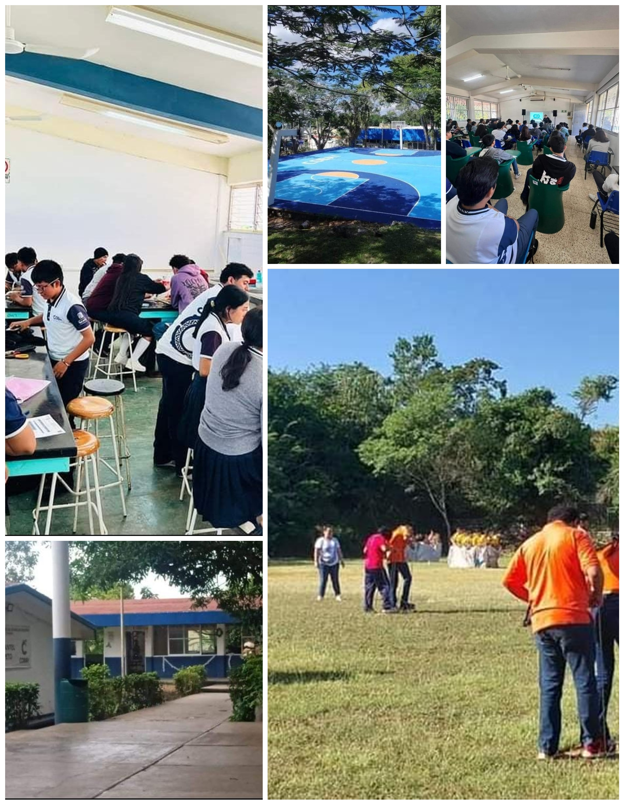
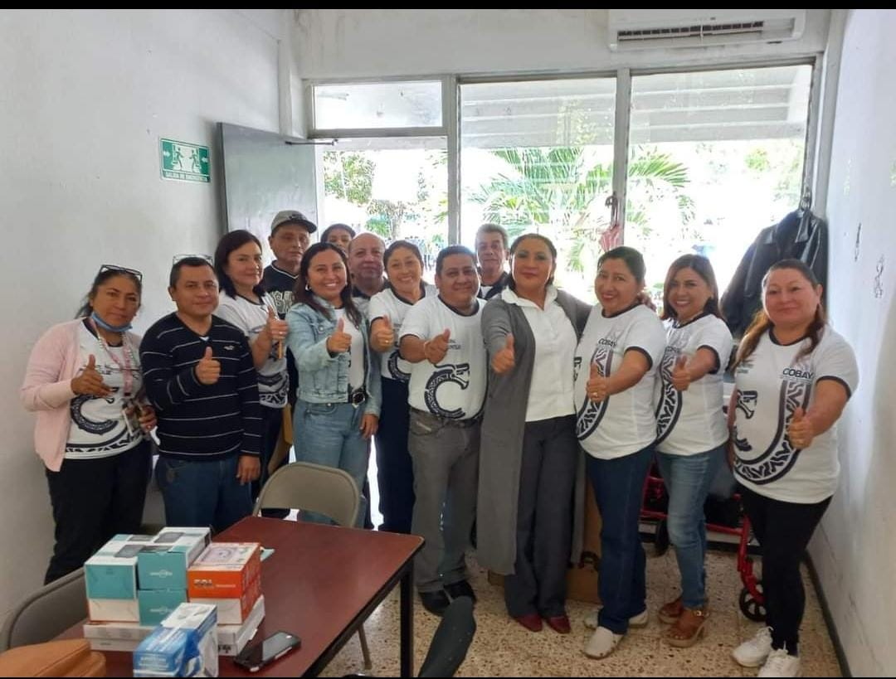

Plantel [Peto]
Acerca del Plantel:
El Colegio de Bachilleres de Yucatán (COBAY) es una institución educativa de nivel medio superior en el estado de Yucatán, México. Ofrece programas de bachillerato general y tecnológico, con un enfoque en la formación integral de los estudiantes. El COBAY cuenta con múltiples planteles distribuidos en diversas ubicaciones dentro del estado, ofreciendo una variedad de opciones educativas para los jóvenes de la región. La institución se destaca por su calidad académica y su compromiso con el desarrollo de habilidades tanto académicas como sociales en sus estudiantes
El Plantel Peto Esta Ubicado En La Carretera Federal Peto, Santa Rosa A 5km, 97930 Peto, Yuc.
Instalaciones:
Imágenes de las instalaciones del plantel (aulas, laboratorios, áreas deportivas, etc.).

Oferta Educativa:
Capacitaciones existen las siguientes que son ( Tic,Administracion,Humanidades,Hiegiene y Salud) de la misma manera que ahi especialidades que son (Fisico- Matematico,Humanidades y Ciencias Sociales,Administracion,Quimico-Biologo)
Actividades Extracurriculares:
Competir con otros Municipios en deportes como futbol o basket hacer actividades de alguna fecha importante.
Equipo Docente:
Bien a continuacion vera nuestro equipo de maestro que contamos en la actualidad para la educacion de su hijo o hija y puede que falten algunos docentes.

Contacto:
Correo(ce_peto@yucatan.gob.mx) ,Telefono(9995679696 ) ,Pagina web(cobay.edu.mx)
Regresar